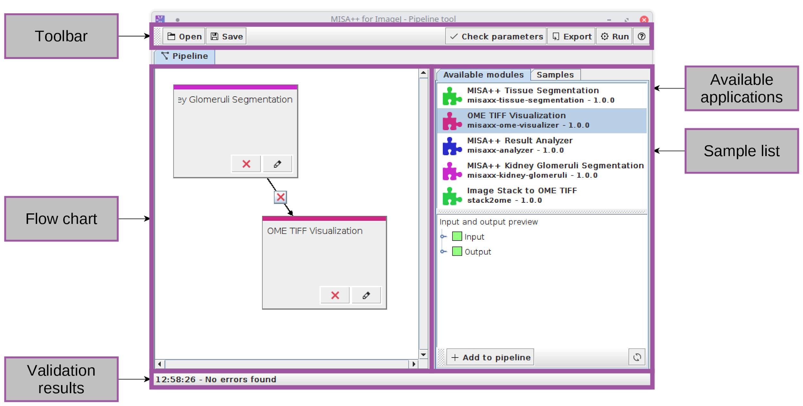
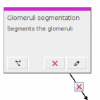

Creating pipelines
MISA++ applications can make usage of other MISA++ applications via a fixed code dependency. Creation of pipelines using code dependencies on the other hand requires modification of the source code. The MISA++ ImageJ plugin provides a tool that allows creation of pipelines of existing MISA++ applications without writing code.

The user interface is divided into four sections:
Pipeline flow chart
List of available MISA++ applications (modules) and an overview of samples
Toolbar with global actions
Parameter validation results (for all pipeline nodes)
Pipeline flow chart
The pipeline flow chart ( represents MISA++ applications as processing steps and data flow as arrow (connections) between processing steps.

Each processing step consists of following components (from top to bottom):
Component |
Description |
Name |
The name of the processing step. Can be edited. |
Description |
Optional description of the processing step. Can be edited. |
|
Click to connect another processing step to the current one. This button is not visible if there are no available connections. |
|
Removes the processing step. |
|
Opens a parameter editor (see Analyzing data) for the MISA++ application behind the processing step. |
Arrow(s) and
|
An arrow connects the data from one application to another. Click
|
 Remove
entry
Remove
entry
Managing samples
By default, all MISA++ applications
within the pipeline have the same set of samples. You can disable
this behavior by navigating the “Samples” tab next to the
pipeline and disabling
 Autosync.
The interface contains a list of all
Autosync.
The interface contains a list of all
 samples,
color-coded by the MISA++ applications that work on the sample.
samples,
color-coded by the MISA++ applications that work on the sample.
Below the list, you can find following actions:
Action |
Description |
||||||||||||||||
|
Ensures that the selected samples are represented in the same set of processing steps.
Example We have following configuration:
If we synchronize Sample 1 and Sample 3, both of them will be in Step 2 and Step 3, but not Step 1. |
||||||||||||||||
|
If enabled (default), keeps samples synchronized across all processing steps. |
Creating a pipeline
To add an application to the pipeline,
select an application and click
 Add
to pipeline. This will create a new processing step in the flow
chart. You can use your mouse to drag the processing step to any
location in the flow chart.
Add
to pipeline. This will create a new processing step in the flow
chart. You can use your mouse to drag the processing step to any
location in the flow chart.
To implement the flow of data from one
application to another, a connection must be created. Click the
Connect
from other node button on the target processing step and
select the source processing step. This will create an arrow
and will allow you to import data from another processing step.
Connecting data
Creating a connection between processing steps does not automatically connect the output of the source to the input of the target processing step.
To connect data, open the parameter
editor of the target processing step via
 Edit
parameters and change the importer (see Importers)
of the input data to
Pipeline:
<Name of the source processing step>. Then select the
appropriate data from the available options.
Edit
parameters and change the importer (see Importers)
of the input data to
Pipeline:
<Name of the source processing step>. Then select the
appropriate data from the available options.

Pipeline actions
Following actions are available at in the toolbar:
Action |
Description |
|
Opens a pipeline description file. Please note that while structure of the pipeline and its connections are imported, all non-pipeline input data (from outside sources such as ImageJ) must be manually set after loading the pipeline. |
|
Saves the structure of the pipeline, including
This will not save importer settings for non-pipeline data sources. |
|
Manually triggers a check if the settings of each processing step are correct. See Validating the current pipeline settings for more information. |
|
Exports a ready-to-use package that processes the pipeline. The packages require that the MISA++ applications are installed on the current computer and includes all settings, parameters and data.
The tool generates two feature-identical scripts run.sh (Linux) and run.py (any operating system) and saves the pipeline structure in pipeline.json. |
|
Executes the pipeline on the current computer. |
|
Opens the documentation. |
 Open
Open Save
Save Check
parameters
Check
parameters Export
Export Run
Run Help
Help
Validating the current pipeline settings
Similar to the analysis with one application (see Analyzing results), the pipeline builder will validate if the processing steps have valid parameters. See Validating the current settings for more information.